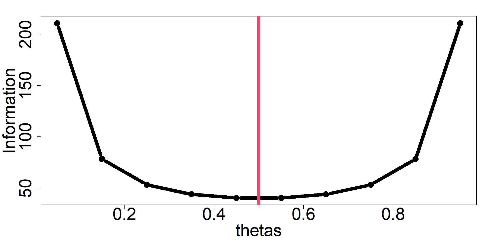

## Statistical Information {.scrollable}
Let’s turn to the field of statistics to understand Information
. . .
Given a statistical model, all the evidence/information in a sample (\(\textbf{y}\), i.e., data) relevant to model parameters (\(\theta\)) is contained in the likelihood function.
. . .
The information an observable random variable (\(\textbf{y}\)) has about an unknown parameter \(\theta\) upon which the probability of \(\textbf{y}\) \((f(\textbf{y};\theta)\) depends.
. . .
. . .
To learn about \(\theta\) from \(\textbf{y}\), we need to link them together via a special function, \(f(\textbf{y};\theta)\)
## Statistical Information
The pieces:
::: incremental - The sample data, \(\textbf{y}\)
-
A probability function for \(\textbf{y}\):
\(f(\textbf{y};\theta)\)
\([\textbf{y}|\theta]\)
-
The unknown parameter: \(\theta\)
- specified in the probability function
:::
## Statistical Information (an example)
We want to know the proportion of a wetlands that contain a rare plant species. We can not sample the whole area.

## Rare Plant Data
We randomly select plots and look for our plant.
Our data are
::: {.cell}
::: {.cell-output .cell-output-stdout}
[1] 10::: :::
. . .
\(\textbf{y}\) is a random variable as it depends on random events.
. . .
In this case, when we induced a random selection of sites.
## Probability/Likelihood Function
\(f(\textbf{y};\theta)\) describes the probability for each \(i^{th}\) data, \(y_i\).
But, not just for the data we observed, for all possible data that could be observed.
. . .
Rules about our data:
\(y \in \{0,1\}\),
. . .
where the curly brackets imply discrete values in our "set".
. . .
Not this: \(y \in [0,1]\),
where the square brackets indicate all real numbers from 0 to 1, including 0 and 1.
. . .
Not this: \(y \in (0,1)\),
where the parantheses indicate all real numbers from 0 to 1, not including 0 and 1.
## Probability Function {.scrollable}
Two outcomes, 0 or 1, so we need two probabilities to describe our random variable.
. . .
\[ f(y;\theta) = [y|\theta]= \begin{cases} \theta & \text{if $y = 1$}, \\ 1 - \theta & \text{if $y = 0$}. \end{cases} \]
. . .
Also,
\[ f(y;\theta) = [y|\theta]= \begin{align} \theta^{y}\times(1-\theta)^{1-y} \end{align} \]
. . .
Also,
\[ \begin{align} P(Y=1) &= \theta \\ P(Y=0) &= 1-\theta \end{align} \]
## Probability Function
Probabilities, such as our parameter, have rules:
::: incremental - \(0 \leq \theta \leq 1\)
\(0 \leq (1 - \theta) \leq 1\)
\(\theta + (1-\theta) = 1\)
:::
## Probability Function {.scrollable}
How do we find \(\theta\) for our data?
. . .
We can use our probability function to calculate the likelihood of a parameter, given our data.
. . .
\[ \mathcal{L}(\theta|y) = \prod_{i=1}^{n} p(y_{i};\theta) \]
. . .
::: {.cell}
#Bernoulli probability function
prob.function=function(theta){prod(theta^y*(1-theta)^y)}
#possible probabilities
theta.guess=matrix(seq(0.01,0.99,by=0.01))
#implement function
likelihood=apply(theta.guess,1,prob.function)
#Find maximum likelood
max.index=which.max(likelihood)
#Theta that maximizes our probability function
theta.est=theta.guess[max.index]
#Define other probability
q.est <- 1-theta.est
#Alternative estimation
theta.est2 <- sum(y)/n:::
. . .
::: {.cell} ::: {.cell-output-display} ::: :::
## Statistical Information (an example)
Let’s combine 1 observation of our random variable, our probability function, and \(\theta\) to quantify the Fisher information (Link ):
. . .
\[\begin{align} I(\theta) &= -E\left[\frac{\partial^2}{\partial\theta^2}\text{log}(\theta^y(1-\theta)^{1-y}) \right]\\ \end{align}\]. . .
For all samples (n), this is reduced to
\[\begin{align} I(\theta) &= \frac{n}{\theta(1-\theta)}\\ \end{align}\]## Statistical Information (an example)
Therefore, for our sample
::: {.cell}
I = n/(theta.est*q.est)
I::: {.cell-output .cell-output-stdout}
[1] 40::: :::
. . .
Consider how information varies by \(\theta\) for a given sample size….
## Statistical Information (an example) {.scrollable}
::: {.cell layout-align=“center”}
thetas=seq(0.05,0.95,0.1)
Information <- n/(thetas*(1-thetas))
par(cex.lab=2.5,cex.axis=2.5,mar=c(5,5,2,2))
plot(thetas,Information,type="b",lwd=8)
abline(v=theta.est,col=2,lwd=8)::: {.cell-output-display}  ::: :::
## Statistical Information (an example) {.scrollable}
Funny enough, Fisher Information is the reciprocal of the variance of our estimate of \(\theta\),\[Var[\hat{\theta}] = \frac{\hat{\theta} (1-\hat{\theta})}{n}\]
## Statistical Information (an example)
::: {.cell layout-align=“center”}
thetas=seq(0.05,0.95,0.1)
Var.theta <- (thetas*(1-thetas))/n
par(cex.main=2.5,cex.axis=2.5,cex.lab=2.5,mar=c(5,5,2,2))
plot(thetas,Var.theta,type="b",lwd=8)
abline(v=theta.est,col=2,lwd=8)::: {.cell-output-display}  ::: :::
::: :::
. . .
How does this knowledge about this probability function inform the design of a study?
## Statistics
A field dedicated to observing the real world to gain informational data.
. . .
Often statistics classes only focus on Power Analysis.
. . .
To obtain informational data , we need to think about::: incremental - how our data will be created - our question of the data - a probability function to use and its parameters - the goal of the question :::
## Reading